Extending further
David Hodge
Source:vignettes/articles/extending_further.Rmd
extending_further.RmdOverview
To extend ggblanket further, users can:
- Use the ggblank function
- Work with non-default stat’s
- Use non-supported aesthetics
- Use non-supported arguments
- Use non-supported geoms
- Create custom wrapper functions
- Work with extension packages
- patchwork
- ggtext
- gghighlight
- ggrepel
- ggdensity
- ggblend
- plotly::ggplotly
- ggiraph
- gganimate
library(dplyr)
library(ggplot2)
library(ggblanket)
library(palmerpenguins)
library(patchwork)
penguins <- penguins |>
mutate(sex = stringr::str_to_sentence(sex)) |>
tidyr::drop_na(sex)1. Use the ggblank function
The ggblank function is the most flexibility function in
ggblanket.
It provides access to the most aesthetics. It provides lots of flexibility to use ggblanket with ggplot2 layers and other extension packages.
Remember the gg_* function builds the x and y scales
based on the data, stat, x, and
y in the gg_* function - but these can be
adjusted using the facet_scales, *_include and
*_limits arguments. The plot scales are constructed without
knowledge of subsequent layers.
So with ggblank, you must include the ggplot2
stat in the gg_blank function where it deviates from
"identity".
penguins |>
gg_blank(
x = body_mass_g,
stat = "density") +
geom_density(col = pal_blue, fill = pal_blue, alpha = 0.9)
penguins |>
gg_blank(
x = body_mass_g,
stat = "bin") +
geom_histogram(col = pal_blue, fill = pal_blue, alpha = 0.9)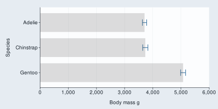
2. Work with non-default stats
Users can change the default stat. The … argument provides access to
the relevant stat_* function as well as the
geom_* function. ggblanket limits the aesthetics available
in each gg_* function to what is required.
penguins |>
gg_errorbar(
x = body_mass_g,
y = species,
stat = "summary",
fun.data = \(x) mean_se(x, 1.96),
width = 0.25,
x_include = 0
) +
geom_bar(
stat = "summary",
fun = \(x) mean(x),
alpha = 0.2,
width = 0.75)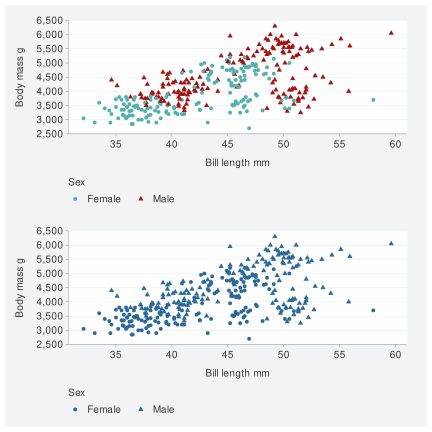
3. Use non-supported ggplot2 aesthetics
While aesthetics other than col/fill are not supported by ggblanket,
it is possible to access these in plots made with a combination of
gg_blank and other ggplot2 code.
#for discrete non-col aesthetic & col aesthetic
penguins |>
gg_blank(
x = flipper_length_mm,
y = body_mass_g,
col = sex) +
geom_point(aes(shape = sex)) +
labs(shape = "Sex") 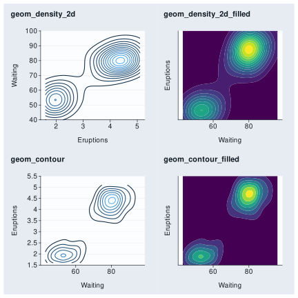
#for discrete non-col aesthetic & no col aesthetic
penguins |>
gg_blank(
x = flipper_length_mm,
y = body_mass_g,
col = sex) + #just to make legend on bottom
geom_point(aes(shape = sex), colour = "#2B6999") +
labs(shape = "Sex") 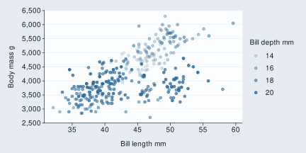
#for continuous non-col aesthetic & col aesthetic
penguins |>
gg_blank(
x = flipper_length_mm,
y = body_mass_g,
col = species,
col_legend_place = "r") +
geom_point(aes(size = bill_depth_mm)) +
labs(size = "Bill depth mm") +
theme(legend.title = element_text(margin = margin(t = 10)))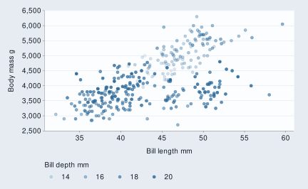
#for continuous non-col aesthetic & no col aesthetic
penguins |>
gg_blank(
x = flipper_length_mm,
y = body_mass_g) +
geom_point(aes(size = bill_depth_mm), colour = "#2B6999") +
labs(size = "Bill depth mm") 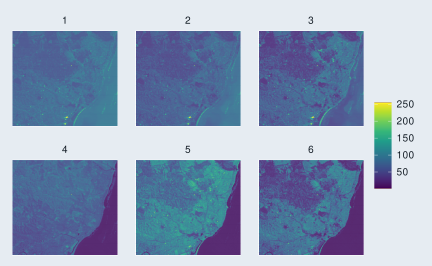
4. Use non-supported arguments
The gg_* function provides access to all arguments
within the geom_* function other than the
mapping argument. It also provides access to most of the
useful arguments you might need in the various guide, scale and facet
functions etc. However, it does not provide all such arguments. For
example, the switch argument within facet_grid is not
supported. A way to access this functionality is to + the
facet_grid(..., switch = "y") in.
penguins |>
gg_point(
x = flipper_length_mm,
y = body_mass_g,
col = island,
facet = species,
facet2 = sex
) +
facet_grid(cols = vars(species),
rows = vars(sex),
switch = "y") +
theme(strip.switch.pad.grid = unit(2, "mm"))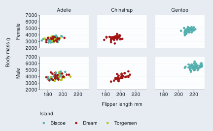
5. Use non-supported geoms
gblanket does not support all ggplot2 geoms. However, some of these can be accessed via the gg_blank function.
p1 <- faithful |>
gg_blank(x = eruptions,
y = waiting,
x_breaks = scales::breaks_pretty(3),
subtitle = "geom_density_2d") +
geom_density2d(aes(col = after_stat(level)),
show.legend = FALSE)
p2 <- faithful |>
gg_blank(x = waiting,
y = eruptions,
x_breaks = scales::breaks_pretty(3),
subtitle = "geom_density_2d_filled") +
geom_density_2d_filled(show.legend = FALSE)
p3 <- faithfuld |>
gg_blank(x = waiting,
y = eruptions,
x_breaks = scales::breaks_pretty(3),
subtitle = "geom_contour") +
geom_contour(aes(z = density, col = after_stat(level)),
show.legend = FALSE)
p4 <- faithfuld |>
gg_blank(x = waiting,
y = eruptions,
x_breaks = scales::breaks_pretty(3),
subtitle = "geom_contour_filled") +
geom_contour_filled(aes(z = density),
show.legend = FALSE)
(p1 + p2) / (p3 + p4)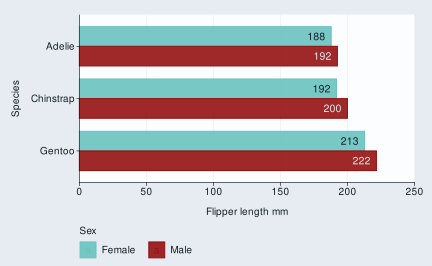
6. Create custom wrapper functions
You can create powerful custom functions. This is because the
... argument can allow you to access all arguments
within the ggblanket gg_* function (and applicable
ggplot2::geom_* function).
gg_point_custom <- function(data, x, y, col,
size = 3,
shape = 17,
pal = RColorBrewer::brewer.pal(8, "Dark2"),
col_title = "",
col_legend_place = "t",
...) {
data |>
gg_point(x = {{ x }}, y = {{ y }}, col = {{col}},
size = size,
shape = shape,
pal = pal,
col_title = col_title,
col_legend_place = col_legend_place,
col_labels = stringr::str_to_sentence,
...)
}
iris |>
gg_point_custom(
x = Sepal.Width,
y = Sepal.Length,
col = Species)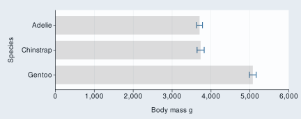
7. Work with extension packages
ggblanket can work with numerous extension packages.
patchwork
This fantastic package is straightforward to use with ggblanket.
p1 <- diamonds |>
gg_point(
x = carat,
y = price)
p2 <- diamonds |>
gg_hex(
x = carat,
y = price,
pal = viridis::cividis(9),
y_limits = c(0, 20000),
y_title = ""
) +
theme(axis.text.y = element_blank())
p1 + p2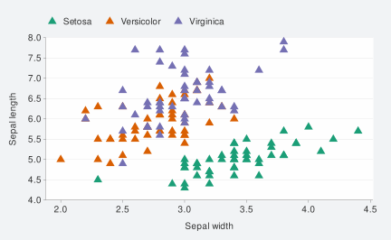
ggtext
The ggtext package can modify plot text using markdown syntax.
Note if you want to have some or all of a title not bold, then it’s important to change the default theme have a plain title.
nc <- sf::st_read(system.file("shape/nc.shp", package = "sf"), quiet = TRUE)
nc |>
gg_sf(col = AREA,
pal = RColorBrewer::brewer.pal(9, "Reds"),
title = "**Bold** or _italics_ or <span style = 'color:red;'>red</span>",
theme = gg_theme(title_face = "plain")) +
theme(plot.title = ggtext::element_markdown())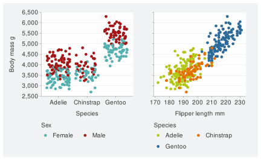
gghighlight
The gghighlight package can be used to highlight geoms or parts thereof.
It should be noted that the gg_* function builds the
scale for the data that it thinks will be within the panel. Therefore in
some situations, you will need to add a
*_limits = c(NA, NA) argument to make sure that the scale
builds to include the full height of the non-highlighted data.
penguins |>
gg_point(x = flipper_length_mm,
y = body_mass_g) +
gghighlight::gghighlight(body_mass_g >= 5000)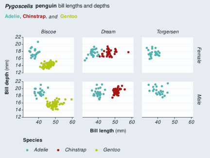
iris |>
gg_histogram(
x = Sepal.Length,
col = Species,
facet = Species,
facet_labels = stringr::str_to_sentence,
y_limits = c(NA, NA)
) +
gghighlight::gghighlight()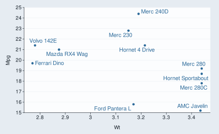
ggrepel
The ggrepel package can be used to neatly avoid overlapping labels.
mtcars |>
tibble::rownames_to_column("car") |>
filter(wt > 2.75, wt < 3.45) |>
gg_point(x = wt, y = mpg) +
ggrepel::geom_text_repel(aes(label = car), col = "#2B6999") ggdensity
The ggdensity package provides visualizations of density estimates.
iris |>
mutate(Species = stringr::str_to_sentence(Species)) |>
gg_blank(
x = Sepal.Width,
y = Sepal.Length,
col = Species,
facet = Species,
col_legend_place = "r") +
ggdensity::geom_hdr(colour = NA) +
labs(alpha = "Probs") +
theme(legend.title = element_text(margin = margin(t = 10)))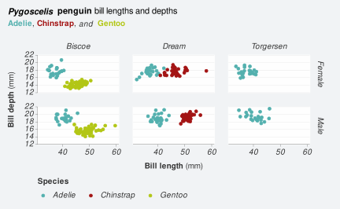
ggblend
The ggblend package provides blending of discrete colours.
library(ggblend)
set.seed(1234)
rbind(
data.frame(x = rnorm(500, 0), y = rnorm(500, 1), set = "A"),
data.frame(x = rnorm(500, 1), y = rnorm(500, 2), set = "B")) |>
gg_blank(
x = x,
y = y,
col = set,
pal = RColorBrewer::brewer.pal(9, "Set1"),
) +
geom_point(size = 3, alpha = 0.5) |>
partition(vars(set)) |>
blend("lighten") +
geom_point(size = 3, alpha = 0.5) |>
partition(vars(set)) |>
blend("multiply", alpha = 0.5) 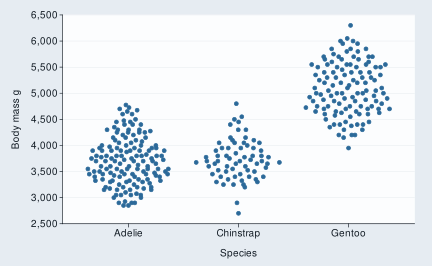
ggiraph
The ggiraph package enables interactive plots.
library(ggiraph)
p <- diamonds |>
gg_blank(
x = color,
col = color,
width = 0.75,
y_include = 0,
stat = "count",
theme = gg_theme("helvetica")) +
geom_bar_interactive(
aes(tooltip = after_stat(count),
data_id = color), width = 0.75)
girafe(ggobj = p,
height_svg = 3,
width_svg = 5,
options = list(
opts_sizing(rescale = TRUE,
width = 0.7),
opts_tooltip(use_fill = TRUE),
opts_hover(css = "stroke:black;stroke-width:1px;")))gganimate
The gganimate package enables animated plots.
library(gapminder)
library(gganimate)
gapminder |>
gg_blank(
x = gdpPercap,
y = lifeExp,
col = country,
facet = continent,
x_trans = "log10",
pal = country_colors,
col_legend_place = "n",
title = "Year: {frame_time}",
x_title = "GDP per capita",
y_title = "Life expectancy",
y_include = 0) +
geom_point(aes(size = pop), alpha = 0.7) +
scale_size(range = c(2, 12)) +
transition_time(year) +
ease_aes("linear")